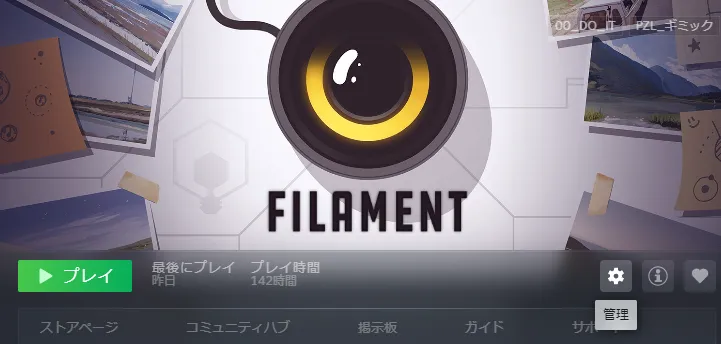
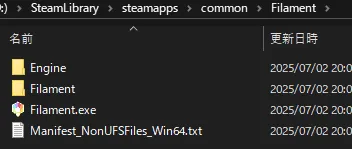

FILAMENT
有志翻訳 MOD
謎がさらに深まり、解けなくなる公式日本語訳を、私の翻訳に変更するMODです。
原文： I mean, who wouldn’t want to be a part of that? Sounds great... Right?
元の訳： 人類革新の一員、偉いすぎで誰でも参加したくなるでしょう
私の訳： そんな計画に参加したくない奴いるか？ 最高だろ？
2026/01/09 進捗：
おわり： ストーリー、ルーム、UI
まだ： メール、破損（翻訳はおわり）、日誌（翻訳中）
インストール方法
03 ゲームフォルダを探す
自分のローカルファイルから、Filament のゲームフォルダを探す。
- Steamを起動し、ライブラリへ。
- 右側の歯車マークを押す。
 - 管理 > ローカルファイルを閲覧 と進む。

- \SteamLibrary\steamapps\common\Filament が開く。
これがゲームフォルダ。
Filament.exe があるのを確認。

close
04 ゲームフォルダにコピペ
Filament.exe があるとこに、解凍したFilament フォルダ をコピペする。
※コピペすると、
ゲームフォルダ\Filament\Content\Paks
の中に「~mods」というフォルダができて、その中に翻訳ファイルが入る。
元のファイルに変化なし。
close
翻訳こぼれ話
-
翻訳方法については別ページ参照。
Unreal Engine 4.24、ローカライズ（.locres ）はなく、アセット（.uasset）に字幕が収まってるタイプ。 - セリフ音声が結構早いので、短く削ってできるだけ読みやすいようにした。
-
頻出用語について。
原文 ⋯ 元訳 ⋯ 私の訳：-
The Firmament ⋯ スカイ・ステーション ⋯ ファーマメント
キリスト教『創世記』。世界は水で満ち、茫洋としている。
神は上下を分け、空と海を創った。このとき上の水（空）を支えたのがファーマメント。天蓋。「フィラメント」と「ファーマメント」が似ててややこしいが、字が似てる ＝「糸みたいなか弱いもんが、神に成り代わろうとしてる」という皮肉になってる。
-
an augment, augmentations ⋯ バイオニック・デバイス ⋯ 〃
「デバイス」という略が使いやすかったのでそのまま。
-
Canary ⋯ カナリ ⋯ カナリア
鳥のカナリアは毒ガス検知に使われた歴史がある。「使い捨て」「見捨てられた」を強調する言葉。
でも彼女は自分の行動でその意味を反転させている。詳しくは Q&A で。
-